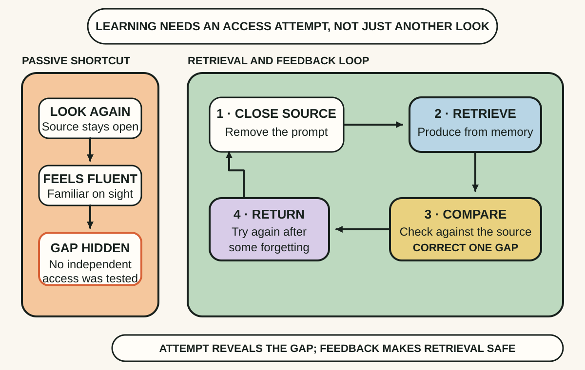
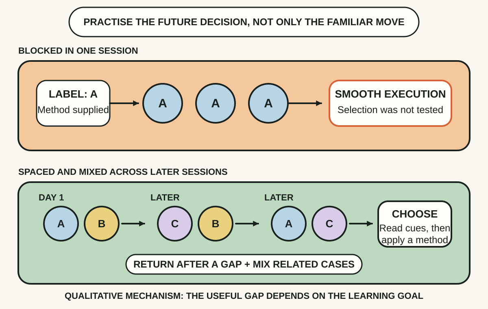
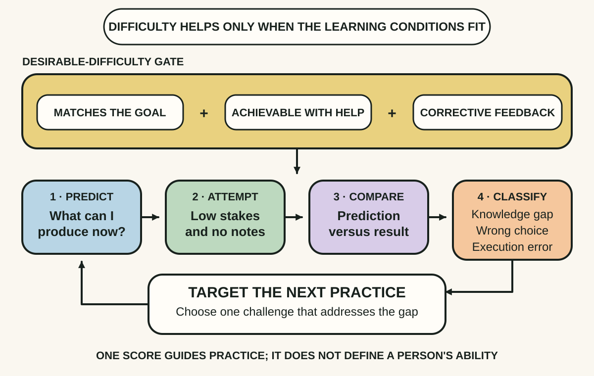

Daily lesson ·
Make It Stick
Replace the comfort of fluent review with learning that survives delay: retrieve before looking, space and mix related practice, then use feedback to calibrate what you can actually produce.
Idea 1
Retrieve before you review #
The idea
Brown, Roediger and McDaniel distinguish exposure from retrieval. Rereading can make words look familiar, but familiarity is not the same as being able to reconstruct an idea when the source is absent. Trying to recall a concept, process or example makes the learner practise the access route that later performance requires.
The attempt also produces information. A blank, distortion or missing step exposes what fluent review can conceal. Checking the attempt against a reliable source then corrects the gap. The book therefore treats low-stakes testing as a learning event, not merely a final measurement of learning.

Why it matters
A runbook, design rule or stakeholder detail is useful only if it can be produced when the document is not already prompting the answer. Retrieval tests that access under safe conditions before the real decision depends on it.
Apply it today
Choose one page, diagram or procedure you studied recently. Close it and write the three most important points or steps from memory.
Reopen the source, mark one omission or distortion and rewrite only that part correctly. Turn the correction into a question for a later attempt.
Caveat or failure mode
Retrieval without accurate feedback can rehearse an error, and an unsupported free-recall task may be too difficult for a novice. Start with a cue or worked example when needed, keep the attempt low stakes and compare it promptly with a trustworthy source. Recognition practice also will not fully prepare someone for a task that requires explanation or production.
Idea 2
Space practice and mix the decisions #
The idea
The book argues that massed practice can create rapid improvement during one session while producing less durable learning than practice distributed over time. Allowing some forgetting makes the next retrieval harder, and that effort can strengthen later access. The best gap depends on how long the learning must last; spacing is a principle, not one universal timetable.
Interleaving adds a different challenge. Instead of completing a block of one known problem type, the learner mixes related types and must first diagnose which method fits. Practice may look slower because the selection decision is now part of the task. That discrimination can matter when real work does not announce which pattern or tool to use.

Why it matters
Tutorials and grouped exercises tell the learner what kind of problem is present. Production faults, customer requests and design trade-offs arrive mixed. Durable skill includes recognising the case before executing a familiar response.
Apply it today
Take three related cases you need to distinguish, such as timeout, authentication and validation failures. Shuffle one example of each without its label.
For every example, name the diagnostic cue and choose the response before checking. Schedule the same mixed set for a short attempt on another day.
Caveat or failure mode
Interleaving is not random context switching. It works best when related categories have meaningful features to discriminate and the learner has enough foundation to attempt them. A short blocked introduction can establish a new procedure, and urgent performance may need focused rehearsal. Mix deliberately, preserve feedback and avoid gaps so long that every attempt collapses into guessing.
Idea 3
Calibrate difficulty with feedback #
The idea
Make It Stick describes several desirable difficulties, including generation, varied practice and reflection. The word desirable matters. A challenge helps when it engages the process the learner needs, can be overcome with suitable support and is followed by information that corrects or strengthens the attempt. Difficulty by itself is not a learning strategy.
The authors also warn that learners are poor judges of mastery. Smooth review can feel effective because the material is familiar in the moment. A prediction made before a low-stakes test, followed by the result and an error diagnosis, calibrates that feeling against performance. The next practice can then target the gap instead of repeating what already feels comfortable.

Why it matters
Without calibration, study time follows comfort: familiar material gets another pass while uncertain knowledge remains hidden. A small scored attempt directs effort toward the actual constraint and reduces surprise when the skill is needed.
Apply it today
Before a short practice, predict how many of three prompts you can answer correctly without help. Record the prediction rather than keeping it in your head.
Answer, check and classify each miss as missing knowledge, wrong method choice or execution error. Choose one next practice that matches the largest gap.
Caveat or failure mode
One small score samples performance; it does not define a person's ability or prove broad competence. High-stakes tests can add anxiety and distort behaviour, while challenges beyond prior knowledge or accessibility needs can produce confusion rather than productive effort. Keep calibration low stakes, use multiple observations, provide appropriate support and align practice with the real outcome.
Knowledge check · 6 questions
Learning check
Answer all 6, then check your answers. Your first result stays in this browser, and each explanation appears after you check. A 3-question review can appear on the homepage from tomorrow.
6 questions not yet answered.
Today's experiment · 10 minutes
Run one calibrated retrieval cycle
- Choose a topic you studied recently and write three questions whose answers matter in real use.
- Predict how many you can answer correctly, then close the source and answer from memory.
- Check each answer against the source and mark one missing fact, wrong choice or execution error.
- Rewrite the weakest answer correctly and add one related case that requires choosing the method.
- Schedule the four prompts for one short mixed attempt on another day.
Observable result: You finish with a prediction, an observed score, one diagnosed gap, a corrected response and a dated retrieval prompt for later practice.
Retrieval practice
Spaced recall
- From Superforecasting: how could a recorded prediction and later score expose an illusion of confidence without revealing the answer in advance?
- From A Philosophy of Software Design: which symptom of complexity could you retrieve without notes, and what example would distinguish it from the others?
Verification
Source notes
These links support the attributed claims and edition details; applications and extensions are labelled in the lesson.
- Make It Stick: official book overview and attributed learning principles
- Peter C. Brown: publication year, publisher and ISBN
- Washington University: authors and research basis of Make It Stick
- Science: The Critical Importance of Retrieval for Learning
- Psychological Science: Spacing Effects in Learning
- Applied Cognitive Psychology: The Effects of Interleaved Practice
- Nature Reviews Psychology: spacing and retrieval practice review
One-sentence takeaway